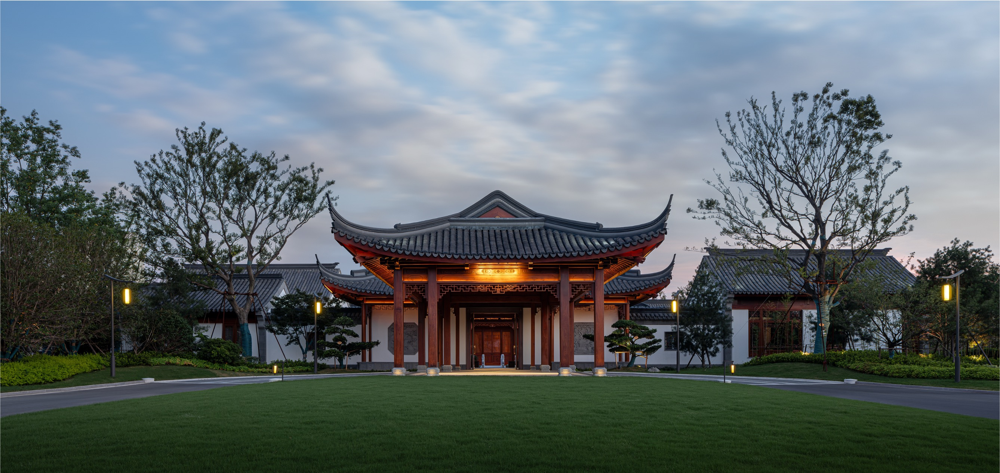
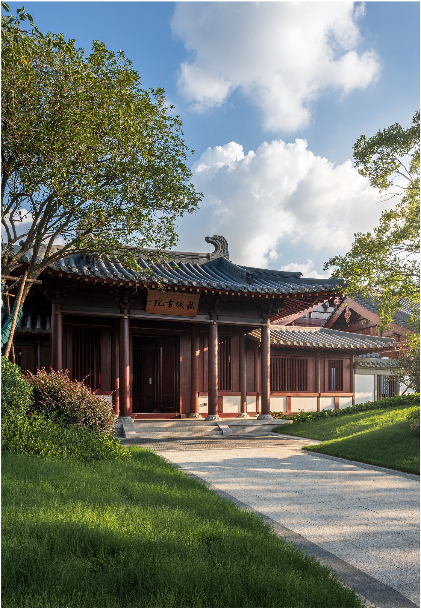
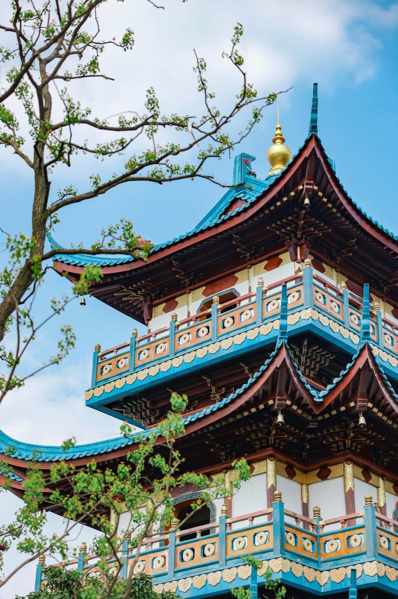
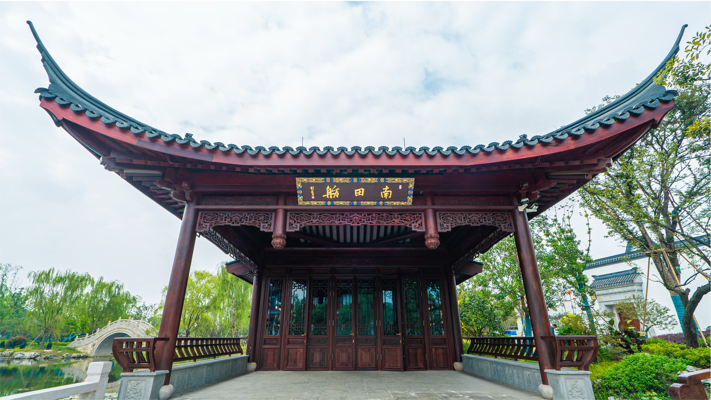
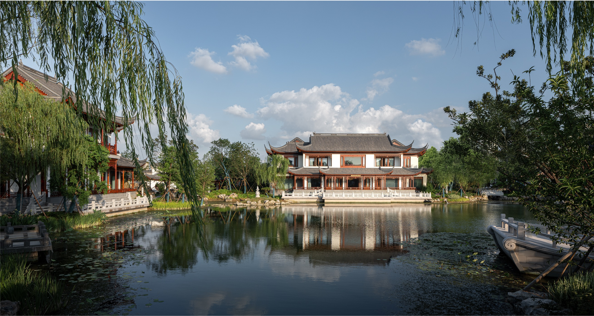
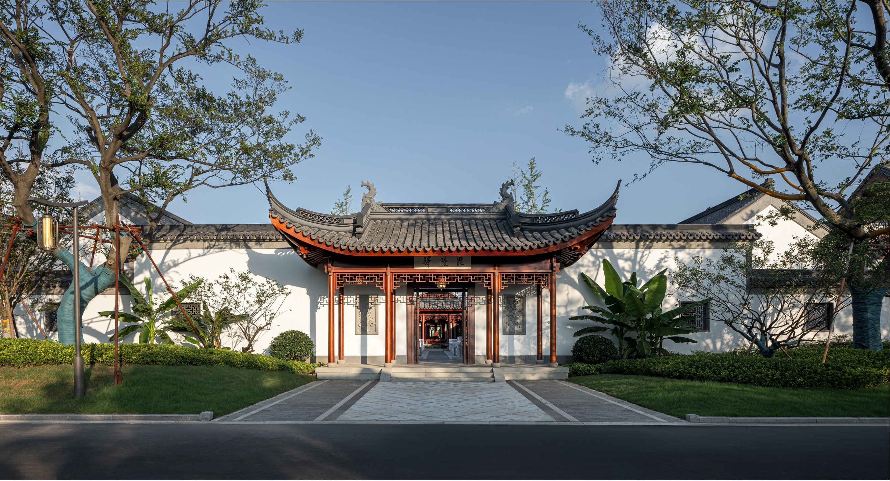

人文故事
嘉贤楼
嘉贤楼以常州历史名园“嘉树园”为灵感，庭院中古树参天，绿意盎然，营造出静谧雅致的氛围，适合静心休憩。楼宇设计融合了江南园林的精髓，展现了中吴文化的深厚底蕴。
紫藤楼
紫藤楼以紫藤花为主题，庭院内藤蔓缠绕，花香四溢，展现江南园林的柔美与浪漫，令人流连忘返。楼宇建筑巧妙融入自然元素，体现人文与自然的和谐共生。

龙城书院
龙城书院承载常州“龙城”文化，庭院设计典雅，古朴书香气息浓厚，是文化交流与思考的理想之地。楼宇内设书房与讲堂，传承常州文脉与教育精神。
星聚阁
星聚阁庭院以星空为灵感，夜晚灯光点缀，仿佛繁星汇聚，营造出梦幻的氛围，适合夜间小聚。楼宇设计现代与古典结合，象征文化与创新的交融。
云溪人家
云溪人家以溪流为特色，庭院内小桥流水，绿树成荫，宛如江南水乡人家，带来宁静的田园体验。楼宇结构简约自然，呼应水乡生活的诗意。

南田画舫
南田画舫以画舫为设计元素，庭院临水而建，湖光山色尽收眼底，仿佛置身画中，充满诗意。楼宇外形仿古画舫，展现江南水文化的独特魅力。
半山堂
半山堂依山而建，庭院层次分明，绿植环绕，视野开阔，带来一种“半山半园”的独特意境。楼宇设计融入山景元素，体现自然与建筑的完美融合。
文亨馆
文亨馆以常州历史文脉为背景，庭院设计古朴典雅，书香气息浓厚，是文化活动与休闲的绝佳场所。楼宇内设文化展示区，弘扬常州人文精神。

毗陵驿
毗陵驿以常州古称“毗陵”为名，庭院再现古代驿站风貌，古韵十足，让人仿佛穿越历史长河。楼宇结构仿古驿站，保留了历史的厚重感。
